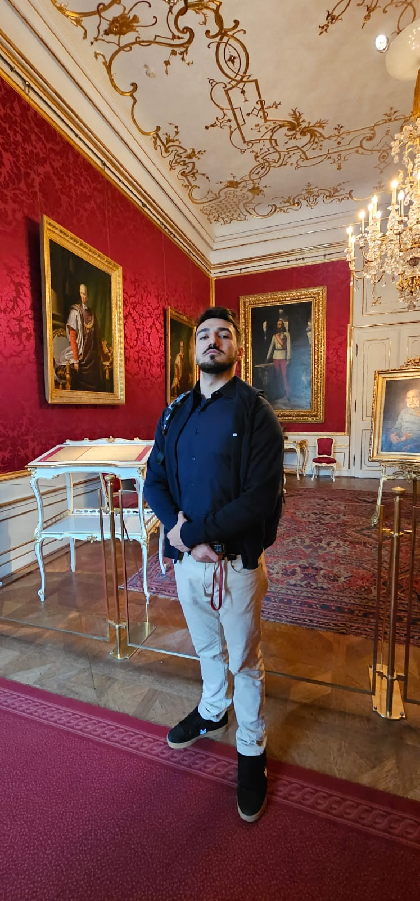
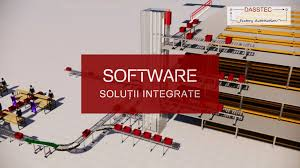

Defta Andrei Robert
📍 Bucuresti| 📧 Email ddeftaandrei@gmail.com
🔗 LinkedIn : https://www.linkedin.com/in/andrei-defta-6122501a0/
Rol: Future Developer Full-Stack

Despre Mine
Sunt un student la UTCB, specializarea Automatica si Informatica Aplicata, pasionat de programare și tehnologie.
Îmi place să invăț lucruri noi și să lucrez la proiecte .
Imi place sa invat sa gasesc solutii si sa imi bat capul cu probleme noi.
Sunt motivat să imi inbunătătesc skilurile și să contribui la proiecte interesante.
💻 Competențe Tehnice
- Python
-
Am experiență în dezvoltarea aplicațiilor utilizând Python, acoperind următoarele domenii:
- Baze de date: SQLAlchemy, SQLite, PostgreSQL
- Vizualizarea datelor: Matplotlib, Seaborn, Plotly
- Machine Learning: Scikit-learn, TensorFlow (începător), Pandas, NumPy
- Interfețe Grafice: PyQt5, Tkinter
- Automatizări: Selenium, BeautifulSoup
Am cunoștințe teoretice și practice în utilizarea acestor librării, dar îmi doresc să aprofundeze partea de Machine Learning, inclusiv modele mai complexe (folosind TensorFlow și PyTorch). De asemenea, sunt interesat să aplic aceste cunoștințe în proiecte web.
🎓 Educație
UTCB Hidrotehnica specializarea Automatica si Informatica Aplicata
Licență în Informatică
2020–2024
Software Development Engineer
